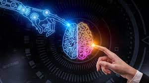
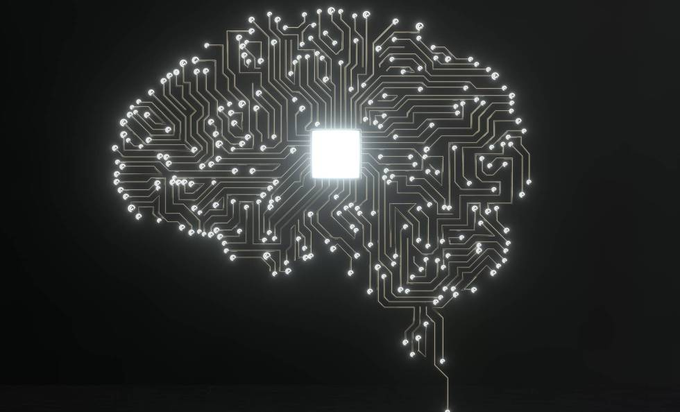

Inteligencia Artificial
La inteligencia artificial (IA) es el campo de la informática que se dedica al desarrollo de algoritmos y sistemas que pueden realizar tareas que normalmente requieren inteligencia humana, como el aprendizaje, el razonamiento y la percepción. La IA se divide en dos categorías principales: la IA débil y la IA fuerte.
 La IA débil, también conocida como IA de uso específico, se enfoca en el desarrollo de sistemas que pueden realizar tareas específicas, como el reconocimiento de voz o la traducción automática. Estos sistemas se basan en algoritmos y técnicas estadísticas para aprender de los datos y realizar sus tareas.
La IA fuerte, también conocida como IA general, se enfoca en el
desarrollo de sistemas que pueden realizar cualquier tarea que
pueda realizar un ser humano, como el aprendizaje, el razonamiento
y la percepción. Estos sistemas se basan en redes neuronales y
algoritmos de aprendizaje automático para aprender de los datos
y realizar sus tareas.
La IA se utiliza en una amplia variedad de aplicaciones, desde
el reconocimiento de voz y la traducción automática hasta el
diagnóstico médico y la conducción autónoma. Está en constante
evolución y se espera que tenga un impacto significativo en la
sociedad en el futuro cercano.